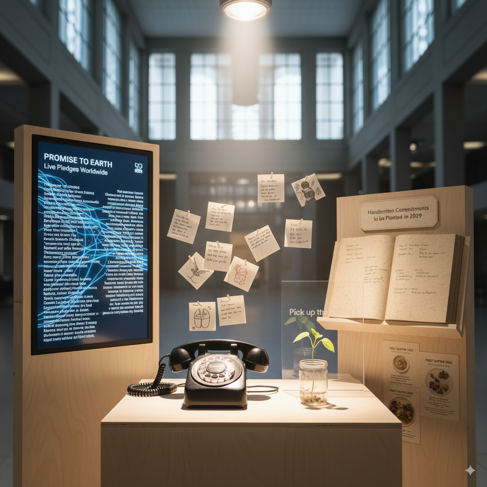
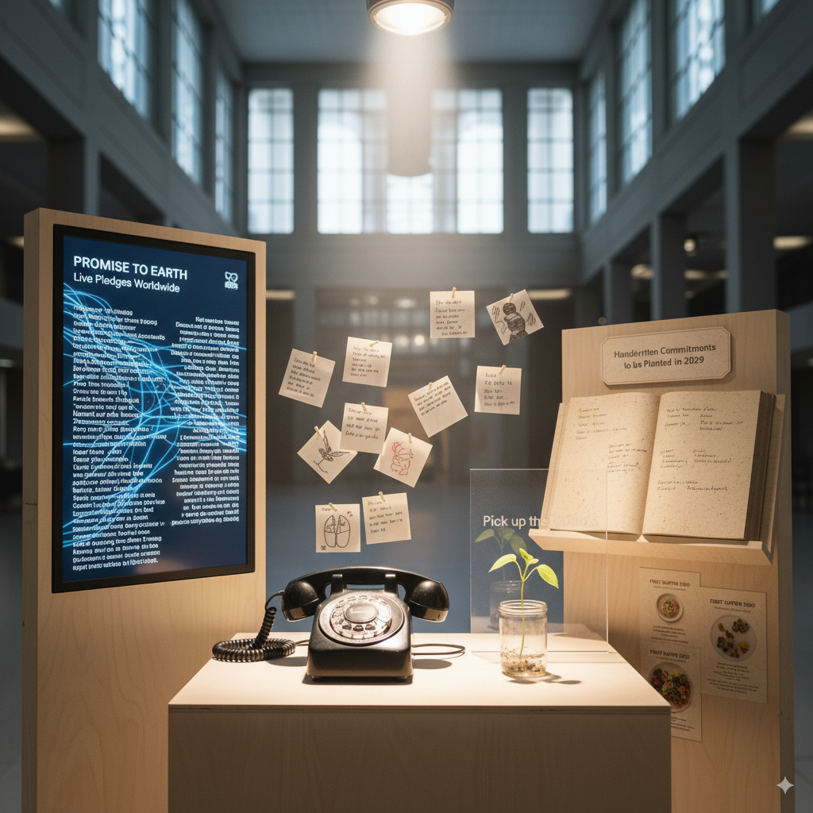

Background & Context
Food is a universal connector, yet young people frequently feel disconnected from the policies and systems that dictate what ends up on their plates. Around the world, youth experience disengagement, eco‑anxiety and a lack of opportunities to shape the future they will inherit. The First Supper responds to this urgency by bringing together art, storytelling and participatory practices to amplify youth voices in conversations about food futures.
Created through a transdisciplinary collaboration between students and faculty in sustainable agriculture and food systems, arts administration, drama and psychology at Bishop’s University, the project bridges science and culture. It invites audiences to envision sustainable and inclusive pathways forward—because imagining tomorrow’s food systems requires both data and imagination.
The interactive experience
The Table of the Future
At the heart of the exhibition is an interactive table set in the year 2050. Through speculative design and tactile prompts, visitors are invited to reimagine what dining could look like when sustainability, equity and community are prioritized.
Seeds of Sound Installation
A reimagined rotary phone invites participants to pick up and listen to excerpts from a growing audio archive. Voices from agroecological farmers, students and community members offer insights about food and culture in both English and French.
Digital Time Capsule
Young visitors can pledge an action that brings their vision of 2050 closer to reality. These commitments form a living archive of possible futures, and a reminder email in 2029 encourages participants to honour their pledge.
Analog Reflections
An artisanal book made from seed‑infused paper invites handwritten promises for better futures. Once the exhibition closes, the pages can be planted to sprout real plants— transforming words into biological growth.
 

Objectives & Key Messages
Co‑create sustainable food futures
The exhibition fosters a participatory space where youth and diverse stakeholders imagine and commit to equitable food systems.
Bridge art, science & community
By blending creative practices with research, we model cross‑sector collaboration and inspire novel solutions.
Transform dialogue into action
Dialogue and imagination lay the groundwork for change. Our installations translate ideas into tangible commitments and living archives.
Key messages
Partner with us
We envision The First Supper framework as a blueprint for institutions worldwide. If you’re interested in hosting the exhibition, supporting youth engagement or collaborating on research, please reach out. Together we can cultivate better futures.
Connect